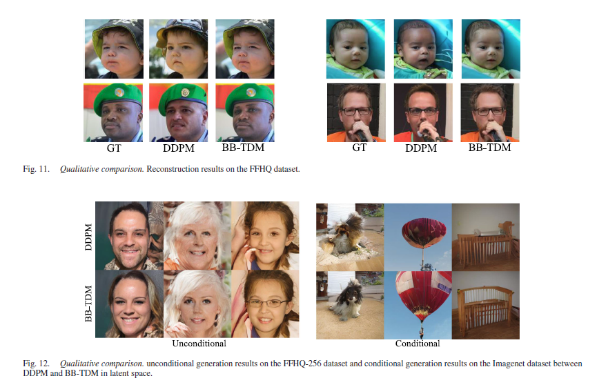
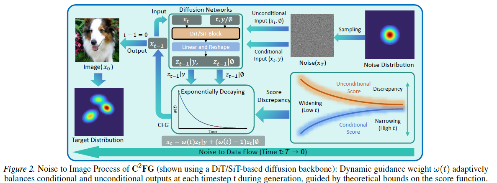

Biography
News Recent Updates
CVPR 2026 paper accepted.
Congratulations for Dr. Gao and
Dr. Zheng !
Stanford EE PhD offer received.
Starting from Fall 2026. Excited to join the Stanford EE family !
Publications ( / )
Convexity of Mutual Information along the Fokker-Planck Flow
ISIT 2025
Differential Properties of Information in Jump-diffusion Channels
ISIT 2025

Bidirectional Beta-Tuned Diffusion Model
TPAMI 2026
A Revisit to Rate-distortion Theory via Optimal Weak Transport
Arxiv 2025
On Strong Data Processing
Inequalities of Generalized Relative Fisher Information
IEEE TIT Under Review

Rate-distortion Theory with Lower Semi-continuous Distortion: A Concentration-compactness Approach
ISIT 2026 Under Review

C2FG: Control Classifier-Free
Guidance via Score Discrepancy Analysis.
CVPR 2026
Research Experiences
ULD Research Intern
Sep, 2025 - Present
Advised by Prof. Sinho Chewi, Prof. Jason Altschuler and Dr. Matthew Shunshi Zhang, my researches focuses on:
- Differential privacy for noisy gradient descent with momentum via the study of the shifted composition rule applied to underdamped Langevin dynamics.
Master Student
Sep, 2023 - Present
Advised by Prof. Jia Wang, my researches include:
- Conducted research on differential properties of information along Fokker-Planck and jump-diffusion channels, including proving the convexity of mutual information along the Fokker-Planck flow under certain conditions.
- Studied strong data processing inequalities (SDPIs) for generalized Fisher-information-type functionals along Fokker-Planck flows, including the heat flow, the Ornstein-Uhlenbeck flow, and Langevin dynamics.
- Developed new existence theorem for rate-distortion problems for general sources using the concentration-compactness principle in optimal transport theory.
- Connected the rate-distortion function with the Schrodinger bridge problem, and established necessary conditions for optimality within the framework of optimal weak transport.
Honors & Awards
The First Prize Scholarship for Graduates of Shanghai Jiao Tong University
top 10%
2025
The First Prize Scholarship for Graduates of Shanghai Jiao Tong University
top 10%
2024
Outstanding Undergraduate Graduate of Shanghai Jiao Tong University
top 5%
2023
The 14th National College Student Mathematical Competition
City level, First Prize
2021
The 13th National College Student Mathematical Competition
Nation level, First Prize (top 0.2%)
2021
The 12th National College Student Mathematical Competition
Nation level, Second Prize (top 0.5%)
2021
Shanghai Jiao Tong University B-Class Excellent Scholarship for Undergraduate
top 5%
2021
The Mathematical Contest in Modeling
World level, Meritorious Winner (First Prize)
2021
Shanghai Jiao Tong University B-Class Excellent Scholarship for Undergraduate
top 5%
2020